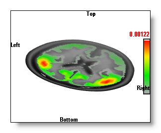
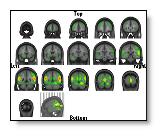
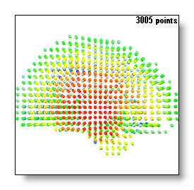

Inverse Solutions Display
If you don't know how to get this display on the first hand, please read this topic first . Also note that very often Inverse Solutions will be nicknamed IS.
You can compute the inverse matrices here , or compute the results of inverse solutions from EEG (or frequency) files.
Buttons


Display modes:
Mouse
Menus
Edit
Search
Regularization
Reset Regularization
Previous Regularization
Next Regularization
Find optimal Regularization, at
current time range only
Find optimal Regularization, across
whole time range
Options
Specify a display scaling
Show / hide color scaling
Show / hide color orientation
Averaging precedence of inverse
'Depth Shifting' trick of 3D inverse
Technical points
How do I get this display?
How do I compute the Inverse Solutions matrices?
Matrix results: scalar of vectorial
Time Averaging
Time Sequence
Time Animation
Combining 2D IS and 3D IS
Changing the color of the MRI
Interpolating between solution points
Solution points distribution
Inverse Solutions Display - Buttons
Display modes

Your display will depend mainly on these 5 buttons. Most of the time their effects combine together to provide some rich output, so knowing their roles is fundamental to get the most of this display!
Show Inverse Solution on 2D clipping planes
The IS will be drawn in 2D (flat) on the current clipping planes , the values seen are the ones intersecting those planes.
The button cycles between 3 states:
-
Nothing (i.e. no 2D drawing)
- Drawing with transparency for the lowest values
- Opaque drawing.
See an example, on top of a single MRI clipping plane (you can set all 3 planes if you wish):

Be aware that if no clipping planes are set, there will be nothing to see!
However, you can have a clipping plane selected without any MRI rendering . This will draw only the IS, as f.ex.:
Finally, note that the coloring only occurs where the MRI mask provided has non-null values .
Show Inverse Solution in 3D
Display the IS values in 3D.
There are 4 states for this mode:
-
Nothing (i.e. no 3D drawing).
-
The "Berries" display,
where each
solution point is drawn with a color and a diameter
proportional to its value
.
-
The 'Potatoes" display, made
from a single, opaque, isosurface
of the IS values.
- The "Onions" display, made from a serie of nested, transparents, isosurface of the IS values.
See an example, on top of a single MRI clipping plane:
The "Berries" display is the fastest, and it gives a good idea of where the sources are.
The "Potatoes" display is a little slower, and it gives an exact 3D isosurface, which can be intersected by other 3D objects (clipping planes, other windows...). The drawback is that it only plots the outer surface of the IS, and you can not differentiate between all these "potatoes" which one is the strongest.
The "Onions" display is the slowest one, as it is indeed a serie of isosurfaces, set with different cutting values, and drawn transparently. It has the advantage over the "Potatoes" display that you can see "through" the first isosurface. So you can tell which "potato" is the most important, on first sight (see in the examples above, the potatoes below the clipping plane are not so strong). The "onions" are also 3D objects that can intersect with others (clipping planes, other windows...).
Show Inverse Solution as 3D vectors
If the results of the IS is vectorial, this will display each of the vectors in 3D .
The small sphere stands for the origin of the vector (i.e. the solution point location of the IS), and the length / width / coloring of the vector will vary according to the strength of the vector.
The usual Brightness / Contrast tuning also applies here, and you might have to highly increase the brightness, or to zoom in, if you want to clearly distinguish each vector!
See a (zoomed in) example:
Show MRI
You can change the way the current MRI is displayed (see here to change the MRI color and properties).
This button is a more convenient way (and faster) to linking the MRI window into the IS one.
The modes availables are exactly the same as the ones from the MRI display .
See some examples, with the IS in the 3D "Potatoes" mode :
Show Solution Points
You can add the solution points location in your display.
This button is a more convenient way (and faster) to linking the Solution Points window into the IS one.
The button cycles between 3 states:
-
Nothing (i.e. no Solution Points)
- Small spheres.
- Bigger spheres.
See an example, with the IS in the 3D "Potatoes" mode :
Regions Of Interest 
This button is enabled if a .rois file is available in the link many file , and the dimension of the rois is equal to the number of solution points .
Pressing this button will cycle within all possible rois listed in the link many file. Once a roi is active, the IS computation is run as usual, then the results are averaged for each region at a time. All the solution points of a given region will then receive the same averaged value, so the display will appear as big chunks of equal values (this is normal).
See an example, without and with rois, while using the Berries display . We can see on the second picture that all the solution points beloging to a given region have the same value / color!
You might be interested to learn how to create the rois file , too?
Clipping planes 
Set the active clipping planes.
See the equivalent MRI related topic , plus the 2D IS topic, if you want to see the IS on these planes.
Slice mode 


Switch to a serie of slices, either in the Coronal, Transverse or Sagittal planes.
Visit the equivalent MRI related topic .
See an example:

Each view is a serie of 2D intersecting planes, on which the IS is always drawn in 2D , exactly the same way as here.
In each view, the last MRI drawn has a different orientation, as to figure out where the slices (the grey lines) come from. Moreover, you can still change the appearance of this MRI and which IS is drawn on it.
You can still rotate the slices, if the orientation does not suit you...
Show Min / Max 
Same behavior as the MRI Max feature , except that it works on the Inverse Solution values instead.
Note that the Min is only available if the current Inverse Matrix can produce scalar value results.
See an example, either with 2D IS or 3D IS :
Find Min / Max positions
Same behavior as the MRI Find Max feature, except that it works on the Inverse Solution values instead.
Note that this is independent from displaying the min / max positions.
If both the Min and Max values are available, they can only be shown at once in the Slice mode display , f.ex.:
In all the other displays, the absolute greatest one will be used to set the clipping plane, f.ex.:
You can still shift the clipping planes by hand, but each time you will release the mouse, Cartool will go back to the automatic positionning. This is done on purpose, so you can explore the other slices to check for some other sweet spots.
Brightness 

Changing the brightness has a slightly different effect according to wether you are in a 2D IS or in a 3D IS mode.
-
In 2D IS mode, it is similar to the brightness control of the MRI Brightness.
Here is an example of a low and a high brightness 2D IS:
-
In 3D IS mode, it changes the isosurface cutting value of the IS, therefore changing the size of the "potatoes".
Here is an example of a low and a high brightness 3D IS:
-
In 3D Vectors mode, it changes the length / width / brightness of the vectors.
Here is an example of a low and a high brightness 3D Vectors display:
Contrast 

Changing the contrast has a slightly different effect according to wether you are in a 2D IS or in a 3D IS mode.
-
In 2D IS mode, it is similar to the contrast control of the MRI Contrast.
Here is an example of a low and a high contrast 2D IS:
-
In 3D IS mode, it also changes (as for the brightness) the isosurface cutting value of the IS, therefore changing the size of the "potatoes". It also changes the color used for the isosurface.
Here is an example of a low and a high contrast 3D IS:
Color auto scaling 
The color auto scaling has a slightly different effect according to wether you are in a 2D IS or in a 3D IS mode.
-
In 2D IS mode, it is similar to the contrast control of the MRI Color auto scaling .
Here is an example of auto scaling, with a low and a high contrast 2D IS:
-
In 3D IS mode, it sets a minimum visible size for the "potatoes", changing the contrast finally setting the actual size .
Here is an example of auto scaling, with a low and a high contrast 3D IS:
Color modes 
You have 2 series of color modes available, and Cartool automatically choose the serie according to the type of IS matrix . These matrices being able to produce either signed or non-signed results.
Within the selected serie, you can of course switch between different color modes (for the Inverse Solutions), similarly to the Potentials.
Reset Regularization 
See here.
Previous Regularization
See here.
Next Regularization 
See here.
Find optimal Regularization 
See here.
Switch to another Inverse matrix
The link file can contain more than one Inverse Solution matrix . This is a very convenient way to test different models, each model having its own brightness and contrast values stored.
The name of the current IS is written in the top-right part of the window.
Switch to another MRI
The link file will usually contain more than one MRI file . By cycling between these MRIs you can focus your message either on the grey matter, the full brain or the full head.
F.ex. the same 3D "onions" IS on top of two different MRIs (of the same head):
Inverse Solutions Display - Mouse
See the general mouse actions, and especially the brightness and contrast control and the polling function .
Inverse Solutions Display - Menus
Edit menu
Search menu
Find TF with maximum value
Scan all Time Frames, and set the time cursor to the position where the greatest absolute min or max is.
Regularization menu
-
The computed regularization is usually a good hint, but you still have to be critical of this value. Watch the result, and try the previous and next regularizations f.ex.
-
The proposed value is also dependent of the type of inverse solution, f.ex. a LORETA vs a WMN, though it shouldn't vary that much for a given set of data.
Switch to the first regularization, usually with value 0 (i.e. no regularization).
This function is available only if the Inverse Matrix embeds more than 1 regularization .
Switch to the previous regularization, until the first one is reached.
This function is available only if the Inverse Matrix embeds more than 1 regularization .
Switch to the next regularization, until the last one is reached.
This function is available only if the Inverse Matrix embeds more than 1 regularization .
Find optimal Regularization, at current time range only
Looking for the optimal regularization at the current time selection (see below).
This option allows you to have the regularization parameter to be as precise as possible at a given time frame (or time interval). As the obtained value depends on the noise level at the current time range, this regularization might not in turn be optimal for other parts of the data. In that case, either repeat the regularization search, or try to have a global, fixed regularization value for the whole data, as explained below.
Find optimal Regularization, across whole time range
Looking for the optimal regularization for the whole data set, independently of the current time selection.
This option allows you to compute a single regularization parameter for the whole data. You can therefore use this value to export the inverse results , f.ex. If you think you're missing some precisions somewhere, you can try to compute a specific regularization value for a given time range, as explained above.
In either two cases, the time range considered (current or whole) is scanned and a best regularization is computed for each time frame. Then the average of all the obtained regularizations is computed.
The best regularization at a given time frame is found by plotting the average norm of all solution points as a function of regularization, and then taking the L-corner of this curve (f.ex. here regularization 3):
Important:
This function is available only if the Inverse Matrix embeds more than 1 regularization .
Options menu
Specify a display scaling
Ask the user for an arbitrary scaling value, equivalent to setting the brightness.
Show / hide color scaling
Does what it says.
Show / hide orientation
Does what it says.
Averaging precedence of inverse
Before:
The EEG is first averaged for the current time period selected, then
the Inverse Solution of this mean period taken
= InverseSolution ( Mean EEG ( for each time point ) )
After:
The Inverse Solution is computed sequentially for each time point of
the current time period selected. Then the average of these IS is taken
= Mean ( InverseSolution ( for each time point ) )
'Depth shifting' trick for 3D inverse
This is discussed in the MRI Depth Shifting topic and in the Potential topic .
Be aware that the shift only applies to the 3D Inverse Solutions , and neither to the 2D Inverse Solutions nor the MRI itself.
See an example here, first picture is a clipped MRI and an IS without depth shifting. Second picture the MRI is not clipped and the IS are "depth shifted" on top. Note that in the latter case, you can see a little more detailed IS:
Inverse Solutions Display - Technical points
How do I get this display?
This display is actually automatically generated when enough files have been linked together, and therefore share enough informations.
There are two cases concerning the files:
First case:
-
1 (or more) EEG file(s) (generally an ERP file),
-
At least one inverse solution matrix file .
-
One solution points file.
-
At least one MRI file, containing a mask around the Grey matter;
other MRIs with the Brain or Full Head are optionals, though they do improve the display quality.
Cartool will multiply the IS matrix with each time frames of each EEG files, in real-time.
Second case:
-
1 (or more) RIS file(s),
-
One solution points file.
-
At least one MRI file, containing a mask around the Grey matter;
other MRIs with the Brain or Full Head are optionals, though they do improve the display quality.
The multiplication of the IS matrix and the EEG data has been done somewhere else (f.ex. with the File Calculator ), and the result is stored in a RIS file. This is usually faster to work with, but it lacks suppleness, as the data are computed once for all.
It can be very useful, though, if you want to compute the inverse solutions with your own recipe.
Important points:
-
Putting many EEG / RIS files will show as many inverse windows as there are of files.
-
Only one solution points file is allowed, and it has to be absolutely the same one that has been used to build the IS matrix you want to use. Missing this point will produce totally wrong displays. Only the one who actually built the IS matrix can certify which file has been used.
-
You can put many IS matrices, but only one is active at a time. You can of course toggle between these matrices, so you can compare between different models.
-
You have to put at least 1 MRI, though 2 or 3 should be the usual case. The first one is mandatory, it holds a mask where non-zero values voxels specifies the grey-matter, and therefore where the IS will be actually computed and displayed .
-
The following MRIs can contain, for example, a segmented brain and a full head, so you can display the inverse solution in these spaces. Each of these MRIs must of course be co-registered.
-
All the MRIs must match exactly the Solution Points geometry.
-
You can also mix the two cases for linkings, that is, both EEG files with IS matrices and pre-computed RIS files.
-
Cartool is doing a lot of checkings to ensure you are on the safe side of this elaborated display. Though, only you can really assert that all these files finally match together (the solution points with the MRI space and the IS matrix).
Recommended readings: the fabulous Linking Files story, and the ignominous " Windows in Slavery " tale.
How do I compute Inverse Solutions matrices?
Either from the Cartool toolbox, or from third-party applications.
Matrix results: scalar or vectorial
According to the model underneath the IS matrix you are using , the results at each solution points location can either be some signed scalar values, or vectors (direction plus intensity of the source). This is wired into the matrix and can not be changed by Cartool!
It has the following consequences:
-
Color maps will account for the possible signed values.
-
If results are signed scalar values, Cartool will produce two isosurfaces for the 3D IS, one for the positive values alone, and the other one for the negative values alone. Each one will be colored differently, of course.
-
If the results are vectors, Cartool currently only display the value of their norms (aka intensity). This is related to the averaging precedence topic.
Time Averaging
This is the same as the basic Time Averaging .
Note however the potential effect of changing the Averaging precedence , which can lead to different results.
Time Sequence
This is the same as the basic Time Sequence .
See a few typical examples here, with the relevant parameters also specified:
-
Time Sequence + Finding Min / Max Slices + Auto color scaling + MRI display as volume + 2 Clipping planes =
-
Time Sequence + Finding Min / Max Slices + Auto color scaling + MRI display as slice + 1 Clipping plane =
-
Time Sequence + Finding Min / Max Slices + Auto color scaling + MRI display as 2D slices + Show Max position =
Be aware that this last combination becomes computationally expensive! Use it either for a single snapshot, or reduce the number of slices , and / or reduce the number of time frames .
Time Animation 
This is the same as the basic Time Animation .
At the moment, the smoother animation will be by using the highly optimized Slice Mode!
Combining 2D IS and 3D IS
This is a possible, but not very useful, combination. That is why most of the time, unless you really want it, Cartool makes 2D and 3D IS exclusive (you can still force them together, though).
The 2D IS applies only on the clipping planes or the slices, so it is more restricted view than the 3D IS. When you turn on the 3D IS, then the 2D IS is switched off, because it does not bring more informations, and increase the display time. However you can bring it back by clicking again on the 2D IS button, which gives you both the planar and the 3D IS:
Finally, also note that switching off the 3D IS will re-activate the 2D IS back.
Changing the color of the MRI
All the color options within the IS display only apply to the Inverse Solutions themselves.
Changing the MRI coloring (changing the brightness, or the color mode f.ex.) is done very simply by switching to the related MRI window, and do your changes there. The results are shown in real-time, so you can easily tune your IS display:

A good hint: if you want only to change the brightness / contrast of the MRI , you don't even need to make the window active ("clicking" on it). It is enough to use the right-click above the MRI window .
Interpolating between solution points
The Solution Points are actually a sub-sampling of the brain grey matter . To fill the spaces between the SPs, some kind of interpolation is therefore needed.
A 4 Nearest Neighbors (4NN) method is used, due to its nice visual output.
Note that the interpolation is restricted to the content of the grey mask .
Solution points distribution
The solution points, according to which IS model is used, can either be placed with a regular interval spacing, or arbitrarily distributed among the grey matter voxels.
In fact, you shouldn't care that much about this, Cartool does it best to handle both cases. However, in case of non-regular solution points , the 3D IS isosurface rendering is noticeably slower, because it is computed in the full grey matter space. The regular grid case, on the other hand, use this property to compute the isosurface on a downsampled version of the grey matter MRI .
See an example of regularly and non-regularly distributed solution points (this is not a perspective distortion):
